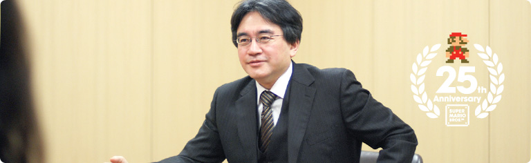

### 「スーパーマリオ２５周年」

<DIV ID="volbox-5"><P CLASS="volnum1"><A CLASS="btn-volnum1" TITLE="社長の代わりに糸井重里さんが訊く" HREF="../vol1/index.html">社長の代わりに糸井重里さんが訊く
<P CLASS="volnum2"><A CLASS="btn-volnum2" TITLE="ファミコンとマリオ 篇" HREF="../vol2/index.html">ファミコンとマリオ 篇
<P CLASS="volnum3"><A CLASS="btn-volnum3" TITLE="『スーパーマリオ』シリーズ開発経験者 篇 その１" HREF="../vol3/index.html">『スーパーマリオ』シリーズ開発経験者 篇 その１
<P CLASS="volnum4"><A CLASS="btn-volnum4s" TITLE="『スーパーマリオ』シリーズ開発経験者 篇 その２">『スーパーマリオ』シリーズ開発経験者 篇 その２
<P CLASS="volnum5"><A CLASS="btn-volnum5" TITLE="『スーパーマリオ』生みの親たち 篇" HREF="../vol5/index.html">『スーパーマリオ』生みの親たち 篇

<DIV ID="main-visual">
<H2>
<DIV ID="pagebox-wrap">
<DIV CLASS="pagebox">
<P CLASS="pagenum"><A HREF="index.html">1. １９８０年代生まれ、それぞれの『マリオ』体験
<P CLASS="pagenum"><A HREF="index2.html">2. 「近所のお兄ちゃん」に教えられて
<P CLASS="pagenum"><A HREF="index3.html">3. 遊び手からつくり手に変わって
<P CLASS="pagenum"><A HREF="index4.html">4. 「任天堂に入りたい」
<P CLASS="pagenum"><A HREF="index5.html">5. ２５年経っても変わらないこと
<P CLASS="pagenums"><A>6. 『マリオ』の遊び方とつくり方

<DIV>

<DIV ID="int-box-wrap">
<H3>
<DIV CLASS="int-box"><DIV CLASS="int-name"><P>西村
<DIV CLASS="int-text"><P>あと、『マリオ』が変わらないなあと感じるのは、<br>開発にかかわる、いろんな人たちの考えや発想が<br>たくさん詰め込まれているところです。<br>それは、入社したての新人であろうが、<br>超ベテランの人であろうが、<br>「こんなのはどうだろう？」とか、<br>「こんな仕掛けはどうだろうか？」といったアイデアを<br>みんなで一斉に言い合うことができて、<br>それぞれの考えをぶつけ合うことで、<br>新しい遊びが生まれていくように感じています。<br>しかも、つくっている人みんなが、<br>すごく『マリオ』のことが大好きで、<br>その気持ちがシリーズに盛り込まれていると思うんです。
<DIV CLASS="clear"><DIV CLASS="int-box"><DIV CLASS="int-name"><P>天野
<DIV CLASS="int-text"><P>それは僕も同感です。<br>それと、僕が『マリオ』が変わらないのは、<br>王道のアクションゲームであり続けている、<br>ということではないかと思います。ですから<br>「ほかのゲームに似る、似ない」といったことを気兼ねせずに、<br>「今度の『マリオ』ではこういうことをやりたい」と、<br>自分の考えていることを、ストレートに正直に言えるんです。
<DIV CLASS="clear"><DIV CLASS="int-box"><DIV CLASS="int-name"><P>西村
<DIV CLASS="int-text"><P>そうですね。
<DIV CLASS="clear"><DIV CLASS="int-box"><DIV CLASS="int-name"><P>天野
<DIV CLASS="int-text"><P>とくに『NewスーパーマリオWii』をつくったときは、<br>新人から、超ベテランの宮本さん、手塚さん、中郷（俊彦）さん<sup>（※18）</sup>までもが<br>「こうしたい、ああしたい」と、思ってることを<br>それぞれが本当に好き勝手に言っていたんです。
<DIV CLASS="notes-box"><DIV CLASS="notes-num"><P>※18
<DIV CLASS="notes-text"><P>中郷俊彦さん＝株式会社エス.アール.ディー代表取締役社長。『スーパーマリオブラザーズ』制作者のひとり。
<DIV CLASS="clear">
<DIV CLASS="clear">

<DIV CLASS="clear">
<DIV CLASS="clear"><DIV CLASS="int-box"><DIV CLASS="int-name"><P>岩田
<DIV CLASS="int-text"><P>みんな『マリオ』について一家言あるので、<br>バラバラなことを言うんですね。
<DIV CLASS="clear"><DIV CLASS="int-box"><DIV CLASS="int-name"><P>天野
<DIV CLASS="int-text"><P>そうなんです。もう、みんなが！（笑）<br>でも、それは、つくり手の全員が<br>『マリオ』のことを本当に好きだからだと思います。
<DIV CLASS="clear"><DIV CLASS="int-box"><DIV CLASS="int-name"><P>岩田
<DIV CLASS="int-text"><P>ありがとうございました。 <br>さて、みなさんはこれから『マリオ』の伝統を<br>つくっていくことになると思うのですが、<br>それぞれの抱負を訊いて終わりにしたいと思います。<br>藤井さん、先に答えますか？それとも後のほうがいいですか？
<DIV CLASS="clear"><DIV CLASS="int-box"><DIV CLASS="int-name"><P>藤井
<DIV CLASS="int-text"><P>え、選んでもいいんですか？<br>じゃあ・・・後がいいです（笑）。
<DIV CLASS="clear"><DIV CLASS="int-box"><DIV CLASS="int-name"><P>天野
<DIV CLASS="int-text"><P>そう来ましたか（笑）。<br>・・・ちょっと時間いただいていいですか？
<DIV CLASS="clear"><DIV CLASS="int-box"><DIV CLASS="int-name"><P>岩田
<DIV CLASS="int-text"><P>はい（笑）。<br>じゃあ、西村さん、先にいってみますか？
<DIV CLASS="clear"><DIV CLASS="int-box"><DIV CLASS="int-name"><P>西村
<DIV CLASS="int-text"><P>はい。『マリオ』については<br>いろんな人から話を聞く機会があるんですが、<br>「『マリオ』はこうだろう」みたいな、<br>口伝えの伝統がありまして。
<DIV CLASS="clear"><DIV CLASS="int-box"><DIV CLASS="int-name"><P>岩田
<DIV CLASS="int-text"><P><A HREF="../../../../wii/interview/rmgj/vol4/index3.html"><SPAN>“マリオらしさ”</SPAN>に対する口伝（くでん）ですね。
<DIV CLASS="clear"><DIV CLASS="int-box"><DIV CLASS="int-name"><P>西村
<DIV CLASS="int-text"><P>そうです。でもそれは文字では記せるものではないので、<br>そういうものをしっかりと、ひとつずつ自分で吸収して、<br>ゲームのなかでしっかり表現できるようにしたいと思っています。
<DIV CLASS="clear"><DIV CLASS="int-box"><DIV CLASS="int-name"><P>岩田
<DIV CLASS="int-text"><P>“マリオらしさ”の口伝のなかで、<br>西村さんが「ああなるほど！」と思ったのはどんなことですか？
<DIV CLASS="clear"><DIV CLASS="int-box"><DIV CLASS="int-name"><P>西村
<DIV CLASS="int-text"><P>たとえばデザインでいうと、<br>ひと目見ただけで、ダメージを受けて弱るだけなのか、<br>それとも一発でミスになってしまうのかを<br>ハッキリ表現することです。
<DIV CLASS="clear"><DIV CLASS="int-box"><DIV CLASS="int-name"><P>岩田
<DIV CLASS="int-text"><P>状況や機能について、見た目でちゃんと<br>表現できていないといけないんですね。
<DIV CLASS="clear"><DIV CLASS="int-box"><DIV CLASS="int-name"><P>西村
<DIV CLASS="int-text"><P>はい。たとえば『NewスーパーマリオWii』では、<br>ワールド５に登場する毒沼をつくったのですが、<br>「これでは、ここに落ちても一発でミスするようには見えないから、<br>もっと危なそうにして」と言われたことがあったんです。
<DIV CLASS="clear"><DIV CLASS="int-box"><DIV CLASS="int-name"><P>岩田
<DIV CLASS="int-text"><P>そこに落ちたら危険だということが<br>たぶんわかりにくかったんでしょうね。
<DIV CLASS="clear"><DIV CLASS="int-box"><DIV CLASS="int-name"><P>西村
<DIV CLASS="int-text"><P>そうなんです。<br>確かに、最初につくった絵は、<br>毒沼なのにきれいで静かな印象だったんです。<br>そこで、いかにも危なそうな感じにするために、<br>目につく紫色に変えて、表面のうねりを強調し、<br>ふつふつと湧き上がる泡の表現も足して、<br>ひと目で「危ない」とわかるように修正しました。<br>そんな風に、誰が見てもそのときの状況が<br>すぐに理解できるような絵づくりをすることが、<br>とても大切だと実感しました。
<DIV CLASS="clear"><DIV CLASS="img-photo">
<DIV CLASS="int-box"><DIV CLASS="int-name"><P>岩田
<DIV CLASS="int-text"><P>吉田さんはどうですか？
<DIV CLASS="clear"><DIV CLASS="int-box"><DIV CLASS="int-name"><P>吉田
<DIV CLASS="int-text"><P>プログラマーの立場でいうと、過去作に出てきた敵を<br>新作で動かすことがあるんですが、<br>動きがおかしいときに、「ここをこう直して」ではなく、<br>「なんとなく動きが変」みたいに<br>ニュアンスで指摘されることが多いんです。
<DIV CLASS="clear"><DIV CLASS="int-box"><DIV CLASS="int-name"><P>岩田
<DIV CLASS="int-text"><P>自分では同じようにつくったつもりでも、<br>見る人が見ると、違いがわかるんですね。
<DIV CLASS="clear"><DIV CLASS="int-box"><DIV CLASS="int-name"><P>吉田
<DIV CLASS="int-text"><P>そうなんです。<br>ですから、どう直すかという部分での難しさはあるんですが、<br>僕としては、過去にいた敵でも、新しい敵でも、<br>みんなに違和感のないようにつくれるようになりたいと思います。<br>そのためには、自分が子ども時代に帰って、<br>子どもの目線で見ても「これなら大丈夫」というものを<br>しっかりつくれるように頑張りたいと思います。
<DIV CLASS="clear"><DIV CLASS="img-photo">
<DIV CLASS="int-box"><DIV CLASS="int-name"><P>岩田
<DIV CLASS="int-text"><P>それは言いかえると、つくり手の視点ではなく、<br>遊び手の視点に立ってものづくりをしたいということですね。
<DIV CLASS="clear"><DIV CLASS="int-box"><DIV CLASS="int-name"><P>吉田
<DIV CLASS="int-text"><P>はい。
<DIV CLASS="clear"><DIV CLASS="int-box"><DIV CLASS="int-name"><P>岩田
<DIV CLASS="int-text"><P>松浦さんの抱負は？
<DIV CLASS="clear"><DIV CLASS="int-box"><DIV CLASS="int-name"><P>松浦
<DIV CLASS="int-text"><P>僕が初めて『マリオ３』を遊んだとき、<br>背景の山や雲に目がついているのに驚いて・・・。
<DIV CLASS="clear"><DIV CLASS="int-box"><DIV CLASS="int-name"><P>岩田
<DIV CLASS="int-text"><P>それは手塚さんの仕業ですね（笑）。
<DIV CLASS="clear"><DIV CLASS="int-box"><DIV CLASS="int-name"><P>松浦
<DIV CLASS="int-text"><P>はい（笑）。あれがあるのとないのとでは<br>印象がぜんぜん変わったものになると思いますし、<br>あのような“遊び心”があるからこそ、<br>誰からも好かれるんだと思うんです。<br>ですから時代や技術が変わっても、<br>そのような“遊び心”を忘れずに<br>新しい『マリオ』をつくれたらいいなと思っています。
<DIV CLASS="clear"><DIV CLASS="img-photo">
<DIV CLASS="int-box"><DIV CLASS="int-name"><P>藤井
<DIV CLASS="int-text"><P>わたしは自分自身が子どもの頃に影響を受けたように、<br>これから遊んでくださる方々が、ゲームを楽しんだ思い出といっしょに、<br>心にいつまでも残るような曲をつくっていきたいです。
<DIV CLASS="clear"><DIV CLASS="int-box"><DIV CLASS="int-name"><P>岩田
<DIV CLASS="int-text"><P>自分の持っていないソフトでも、<br>思わず口ずさんでしまうような曲をつくりたい、ということですね？
<DIV CLASS="clear"><DIV CLASS="int-box"><DIV CLASS="int-name"><P>藤井
<DIV CLASS="int-text"><P>はい。<br>あとは、プレイヤーの気持ちを自然に盛り上げるような演出を<br>どんどんつくっていきたいと思います。<br>そういう演出を近藤さんはずっと考えてこられていて、<br>たとえば、『スーパーマリオワールド』で<br><SCRIPT LANGUAGE="JavaScript" TYPE="text/javascript">
<!--
	document.write('<A HREF="player.html?mv=movie011&amp;width=320&amp;height=280&amp;id=movie011" CLASS="thickbox movie011" TITLE="ヨッシーに乗ったときに、太鼓が鳴る"><SPAN>ヨッシーに乗ったときに、太鼓が鳴る<'+'/SPAN><'+'/A>');
//-->
</SCRIPT><NOSCRIPT><A HREF="movie/movie011.jpg"><SPAN>ヨッシーに乗ったときに、太鼓が鳴る</SPAN></NOSCRIPT>ような・・・。
<DIV CLASS="clear"><DIV CLASS="int-box"><DIV CLASS="int-name"><P>岩田
<DIV CLASS="int-text"><P>そうですね。そういった音の工夫は、これまでも<br>『マリオ』のいろんなところでしているんですよね。
<DIV CLASS="clear"><DIV CLASS="int-box"><DIV CLASS="int-name"><P>藤井
<DIV CLASS="int-text"><P>はい。ですので、遊ぶのがもっと楽しくなるような音の演出を<br>自分でいろいろ考えて入れていけるようになりたい、<br>というのがわたしの抱負です。
<DIV CLASS="clear"><DIV CLASS="img-photo">
<DIV CLASS="int-box"><DIV CLASS="int-name"><P>岩田
<DIV CLASS="int-text"><P>それでは最後に天野さんお願いします。
<DIV CLASS="clear"><DIV CLASS="int-box"><DIV CLASS="int-name"><P>天野
<DIV CLASS="int-text"><P>はい。ものすごくありきたりの言葉になってしまうんですけど、<br>お客さんの期待を裏切らないものをつくりたいです。<br>たとえば、ダメージを受ける敵にはトゲがついているとか、<br>マリオが崖に来たら、その先に足場が見えるとか、<br>そんな細かい部分のひとつひとつに気を配ることが<br>結果的に遊んでくださるお客さんの期待を<br>裏切らないことになると思っています。
<DIV CLASS="clear"><DIV CLASS="int-box"><DIV CLASS="int-name"><P>岩田
<DIV CLASS="int-text"><P>苦労して進んだら、その先に必ず<br>何かのご褒美があるようなこともそうですよね。
<DIV CLASS="clear"><DIV CLASS="int-box"><DIV CLASS="int-name"><P>天野
<DIV CLASS="int-text"><P>はい。お客さんの期待を裏切らないようにするためには、<br>やっぱりお客さんが遊ぶ姿を、つくり手が想像しながら<br>つくらないといけないと思うんです。<br>その上で、お客さんが何を期待しているのかということを<br>イメージすることがとても大事なんだと思います。<br>そのようにして、お客さんの期待を裏切らないよう、<br>『マリオ』に限らずいろんな商品を<br>これからもつくり続けていきたいというのが、僕の抱負です。
<DIV CLASS="clear"><DIV CLASS="img-photo">
<DIV CLASS="int-box"><DIV CLASS="int-name"><P>岩田
<DIV CLASS="int-text"><P>ありがとうございました。<br>世の中には、ひとつの商品が一時的にポンと人気が出て、<br>ブームになるということはよくあることですが、<br>『マリオ』のように、２５年も人気が保たれて、<br>しかも、ここ数年の『マリオ』を見ると、<br>もうひとつの新しいピークを迎えているのではないかと思えるくらい、<br>たくさんの人たちに遊んでもらえているということは、<br>ある意味、ちょっとした“奇跡”のような出来事のように感じています。<br>&nbsp;<br>『マリオ』にはこれからも元気でいてほしいですし、<br>２５年後の『スーパーマリオ』５０周年のときも、<br>ここにいるようなみなさんの世代が<br>マリオの伝統を守っているはずですので、<br>その意味でも、“１９８０年代生まれの開発者たち”である<br>みなさんから話を訊くことができて、とても新鮮でした。<br>&nbsp;<br>友だちといっしょに遊んだ人もいれば、<br>お兄さんの部屋に忍び込んで弟さんといっしょに遊んだ人、<br>それに「近所のお兄ちゃん」から<br>遊び方を教えてもらった人もいましたからね（笑）。<br>&nbsp;<br>『マリオ』の遊び手としてリレーをしてきたみなさんが<br>いま、つくり手となってリレーをしている、<br>ということなんでしょう。<br>&nbsp;<br>そのリレーの先頭を走っているのは<br>宮本さんたちベテランのみなさんです。<br>&nbsp;<br>これまで４回にわたって<br>社長が訊く「スーパーマリオ２５周年」のインタビューをしてきましたが、<br>次回は宮本さん、手塚さん、中郷さん、そして近藤さんをお迎えして<br>たっぷりお話を訊きたいと思います。<br>みなさん、今日はありがとうございました。
<DIV CLASS="clear"><DIV CLASS="img-photo">
<DIV CLASS="int-box"><DIV CLASS="int-name"><P>一同
<DIV CLASS="int-text"><P>ありがとうございました。
<DIV CLASS="clear"><DIV ID="asks-pagination">
<DIV ID="page-prev"><A HREF="index5.html">5. ２５年経っても変わらないこと
<DIV CLASS="clear">
<DIV CLASS="clear">
<DIV ID="ftr">
<P CLASS="home"><A HREF="../../../../index.html">任天堂ホームページ
<P CLASS="pagetop"><A HREF="#pagetop">ページの一番上へ
<DIV CLASS="clear">

<DIV CLASS="clear">
</BODY>
</HTML>
